Neue Erlasse und Gesetze
Wirksame Beschlüsse
Gesetze, Erlasse und Bekanntmachungen des Souveräns, des Senats und der Hand des Kaisers im Wortlaut.
2026
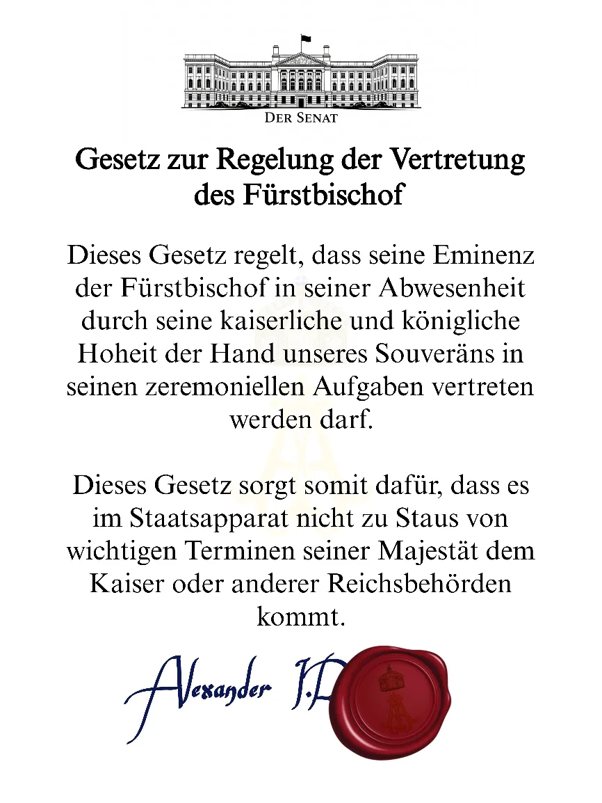
Gesetz zur Regelung der Vertretung des Fürstbischofs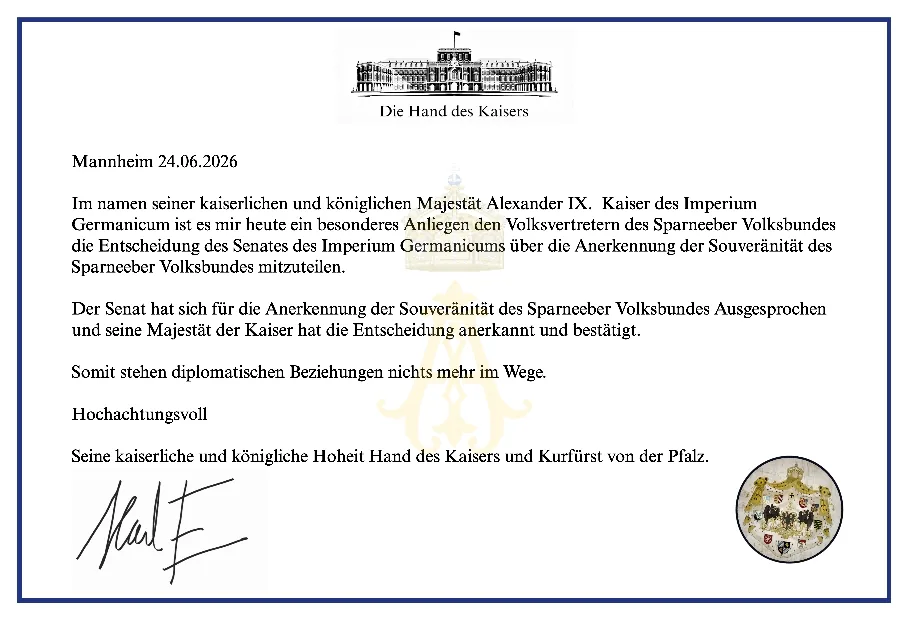
Anerkennung der Souveränität des Sparneeber Volksbundes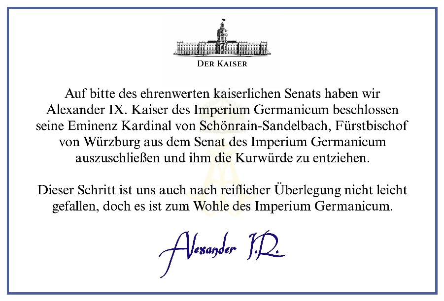
Ausschluss des Fürstbischofs von Würzburg aus dem Senat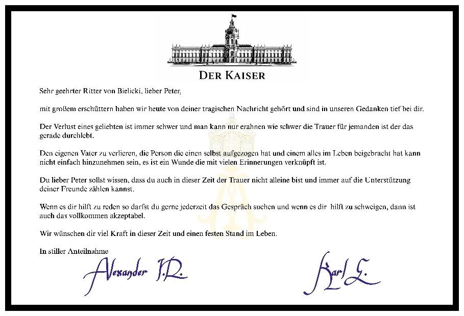
Anteilnahme an Ritter von Bielicki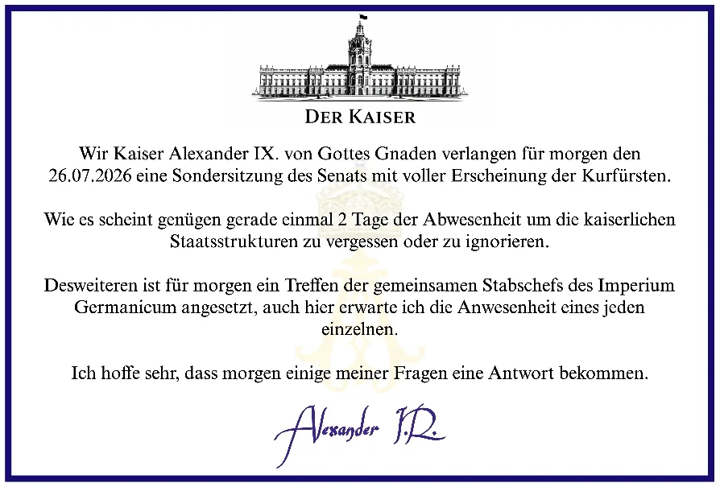
Einberufung einer Sondersitzung des Senats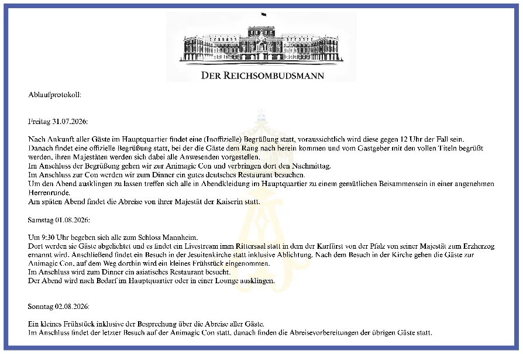
Ablaufprotokoll 31.07. – 02.08.2026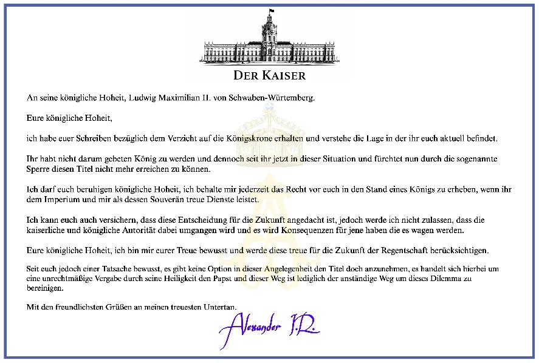
Schreiben an Ludwig Maximilian II. von Schwaben-Württemberg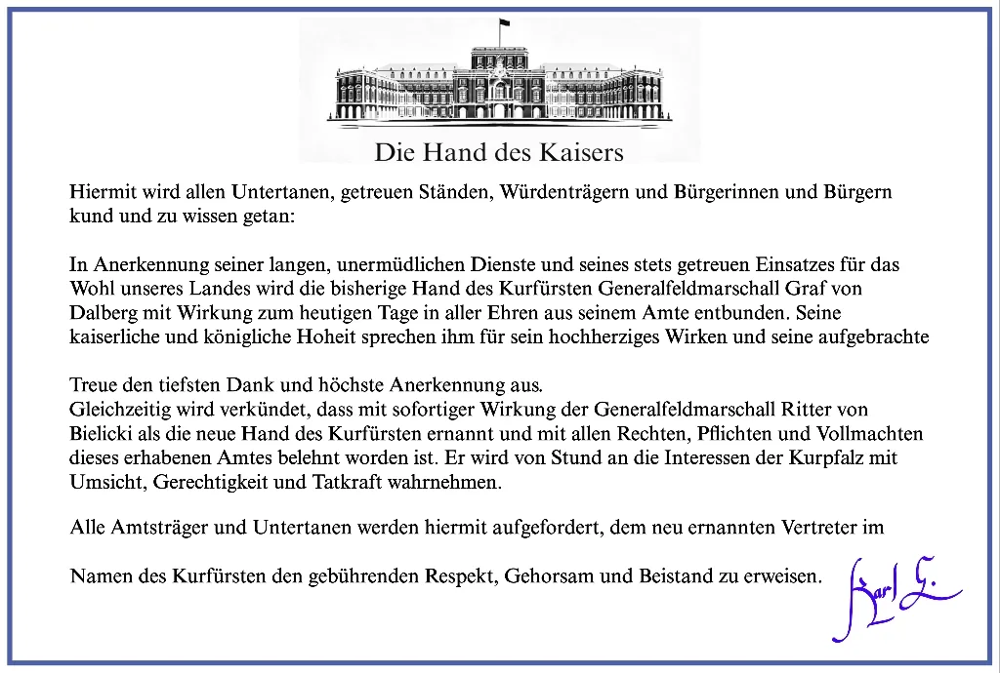
Ernennung einer neuen Hand des Kurfürsten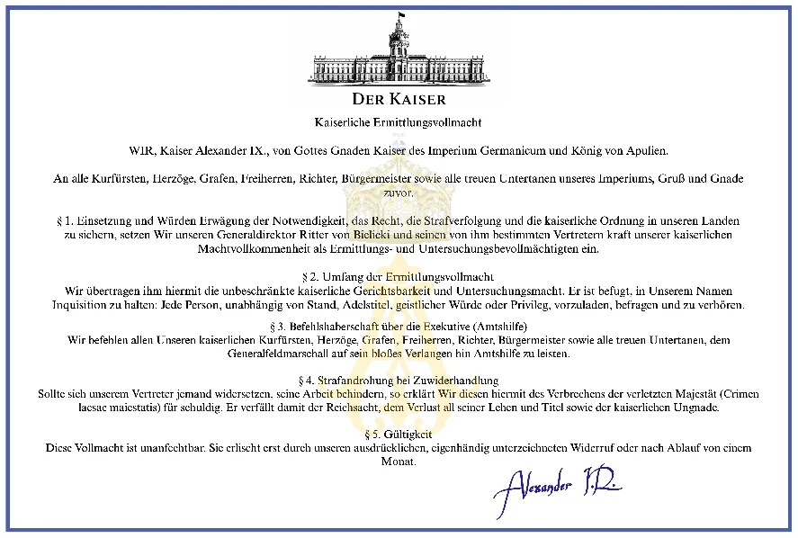
Kaiserliche Ermittlungsvollmacht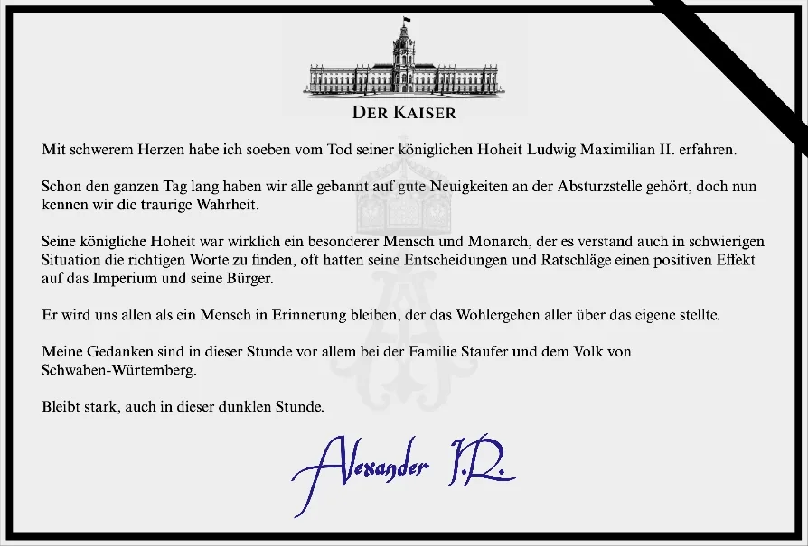
Trauerbekundung zum Tod seiner königlichen Hoheit Ludwig Maximilian II.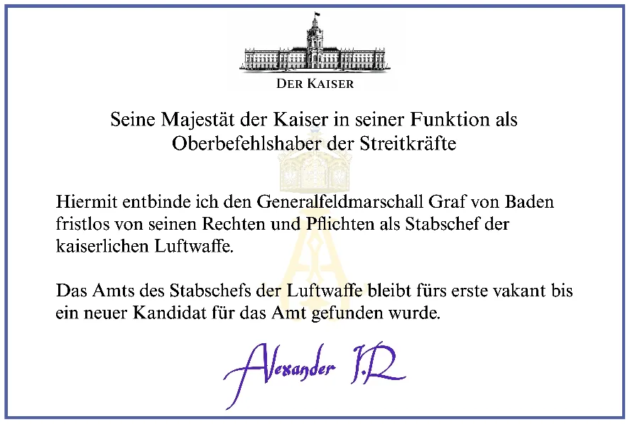
Entbindung des Stabschefs der kaiserlichen Luftwaffe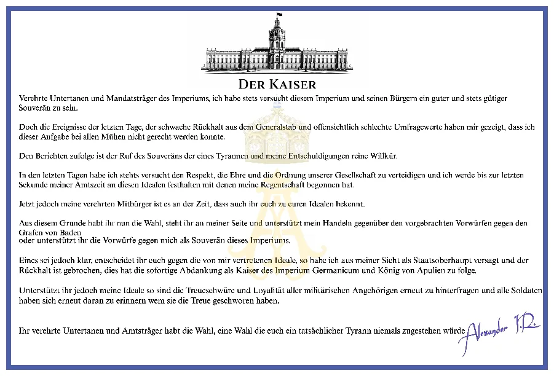
Erklärung an die Untertanen und Mandatsträger des Imperiums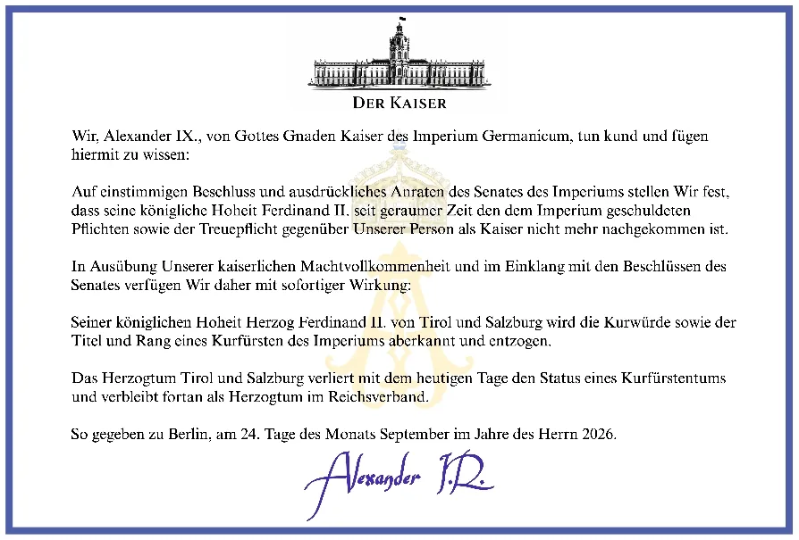
Aberkennung der Kurwürde des Herzogtums Tirol und Salzburg